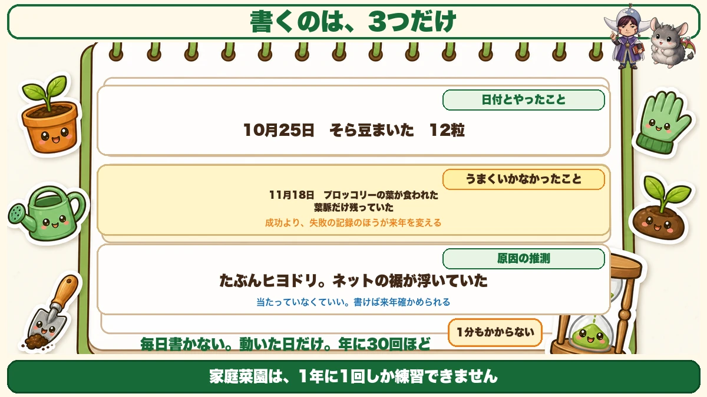
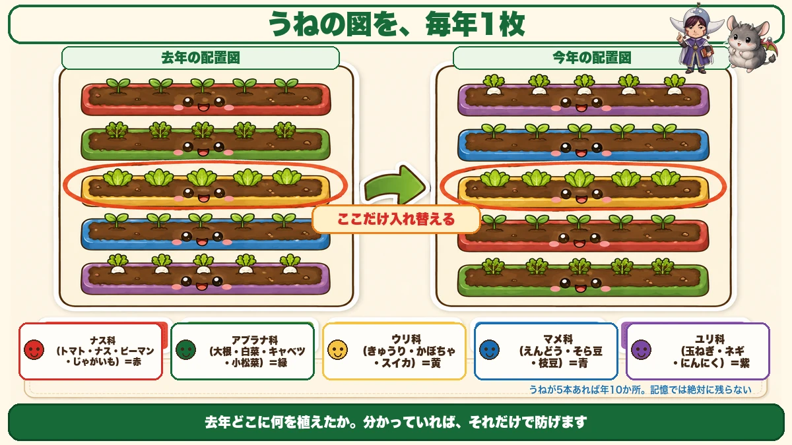
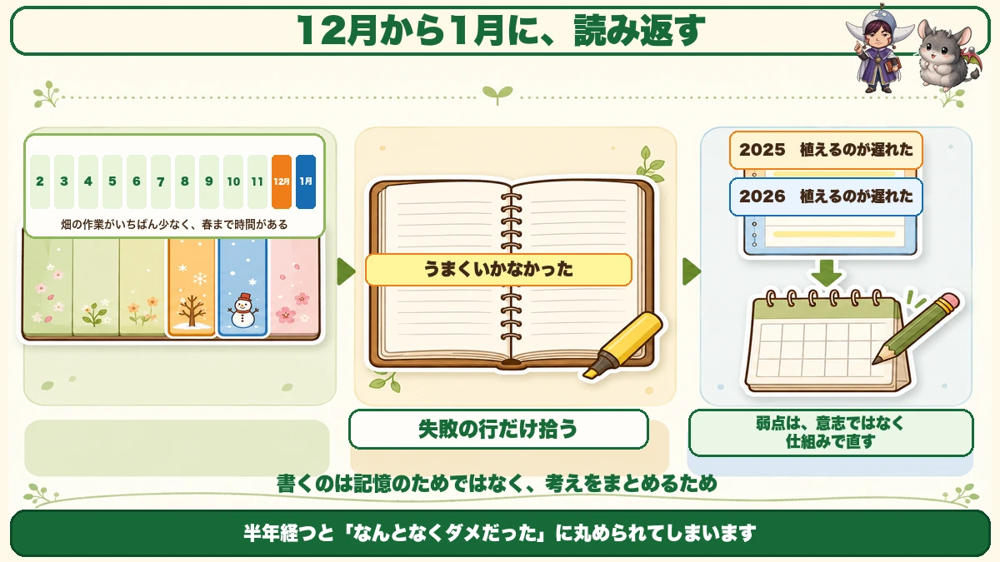

You only get one go a year 📔 Three lines on the days it went wrong

📔 "I can't remember when I sowed it last year."
📔 "I think I make the same mistake every season."
📔 "I tried keeping a diary. It lasted three days."
Hello, I'm Eiko. Eight years of growing vegetables organically and without pesticides, and a teaching licence in science.
The most important line first:
In a garden you only get to practise once a year.
You can grow a tomato once a year. Eight years in, I have grown tomatoes eight times. No amount of reading changes that number.
Which is exactly why the record turns into the skill.
There are only three things to write

What this diagram says （図解の文字）
- The date and what you did — "25 Oct — sowed broad beans — 12 seeds"
- What didn't work — "18 Nov — broccoli leaves eaten — only the veins left"
- Your guess at the cause — "probably a bulbul. The netting was lifting at the bottom"
- "The failures change next year more than the successes do."
You don't have to write every day
Start it as a diary and it won't last. Mine didn't, several times.
Only write on days something happened — sowed, planted, harvested, or something looked wrong. That's thirty or forty entries a year. Not daily.
① The date and what you did
"25 Oct — sowed broad beans — 12 seeds."
That's it. The variety name is a bonus. Having the date alone lets you plan next year.
② What didn't work
This is the line with the value in it.
"18 Nov — broccoli leaves eaten — only the veins left."
The failures change next year more than the successes do, because a success is hard to reproduce and a failure is easy to avoid.
③ Your guess at the cause
And the most important line of the three.
"Probably a bulbul. The netting was lifting at the bottom."
It doesn't have to be right. Written down, it's a hypothesis you can test next year. Not written down, you'll stand in the same spot next season wondering the same thing.
Three lines. It takes under a minute.
Draw the beds — one sheet a year

What this diagram says （図解の文字）
- Last year's plan ／ this year's plan — "swap just this one"
- Colour by family: nightshades (tomato, aubergine, pepper, potato) = red ／ brassicas (daikon, Chinese cabbage, cabbage, komatsuna) = green ／ cucurbits (cucumber, squash, watermelon) = yellow ／ legumes (peas, broad beans) = blue
This is what prevents rotation problems
More useful than any amount of writing is a plan of the beds. Draw them as rectangles on paper and write in what went where. Keep one sheet per year.
Why it works
Grow the same plant family in the same place repeatedly and the fungi and nematodes that like it build up. To avoid that, all you need to know is what was where last year.
And that is precisely what memory doesn't hold. Five beds across two seasons is ten pieces of information. A year later you will not recall them.
Colour by family and it reads at a glance
- Nightshades (tomato, aubergine, pepper, potato) — red
- Brassicas (daikon, Chinese cabbage, cabbage, komatsuna) — green
- Cucurbits (cucumber, squash, watermelon) — yellow
- Legumes (peas, broad beans, edamame) — blue
- Alliums (onion, spring onion, garlic) — purple
If the same colour lands on the same bed as last year, swap just that one. That's most of a planting plan done.
Where to keep it
I'll only recommend what actually lasted
I ended up using the notes app on my phone, for one reason: I can write it while standing in the garden. A notebook is in the house, and half of what happened is gone by the time I get back.
Photographs live in the same place too. One picture of the chewed leaves and next year you'll recognise it instantly.
If you prefer paper
A calendar is enough — the kind showing a whole month at once, not a day at a time. Circle the days you sowed, and write a few words in the margin.
Line up a year of them and you have your own garden's almanac.
Read it back once a year

What this diagram says （図解の文字）
- A timeline of the months, with December–January marked: "the least work in the garden, and time before spring"
- "Pick out only the lines that say it didn't work"
- "2025 — planted late" ／ "2026 — planted late"
- "Fix a weakness with a system, not with willpower"
Winter is the time
A record you never read back does nothing. The right moment is the quietest weeks of your winter — least to do outside, and still time before spring.
Only read the failures
Don't read all of it. Pick out only the lines where you wrote that something didn't work.
And if the same thing appears two years running, that's your weakness.
Mine was "planted late", several years in a row. Once I saw it, I started writing sowing dates into the calendar in advance. A weakness is fixed faster by a system than by willpower.
🔬 The science: how a record turns into experience
Less botany than learning, this one.
It's well established that having an experience isn't what makes it stick. What makes it stick is putting the experience into words.
"The leaves were eaten" becomes "I think it was a bulbul, because the netting was lifting." At that moment an event turns into knowledge.
Writing isn't for remembering. It's for working out what you think.
And one more. People remember the reasons things went well more accurately than the reasons things went badly. A failure feels vivid at the time — but six months on it has rounded off into "that one just didn't do well". The details go first.
So write three lines on the day it goes wrong. You're leaving the details for yourself in six months' time.
If you garden with children: draw the vegetable once and write the date on it. Compare it with the same date next year and the difference in growth is unmistakable. That's a record too.
To sum up
- ✅ You only practise once a year — so the record becomes the skill
- ✅ Don't write daily. Only on days something happened — about thirty a year
- ✅ Write three things: date and action ／ what didn't work ／ your guess at why
- ✅ The guess doesn't have to be right. Written down, it's testable
- ✅ One plan of the beds each year — the surest defence against rotation problems
- ✅ Colour by plant family and last year's overlap jumps out
- ✅ Keep it somewhere you can open in the garden — phone notes, or a month-per-page calendar
- ✅ Read it back in the quiet of winter, failures only
- ✅ The same failure twice = a weakness. Fix it with a system
You don't have to do all of it. Write down what you did in the garden today, and one thing that didn't go right. That's the whole method 🌱
Thank you for reading!